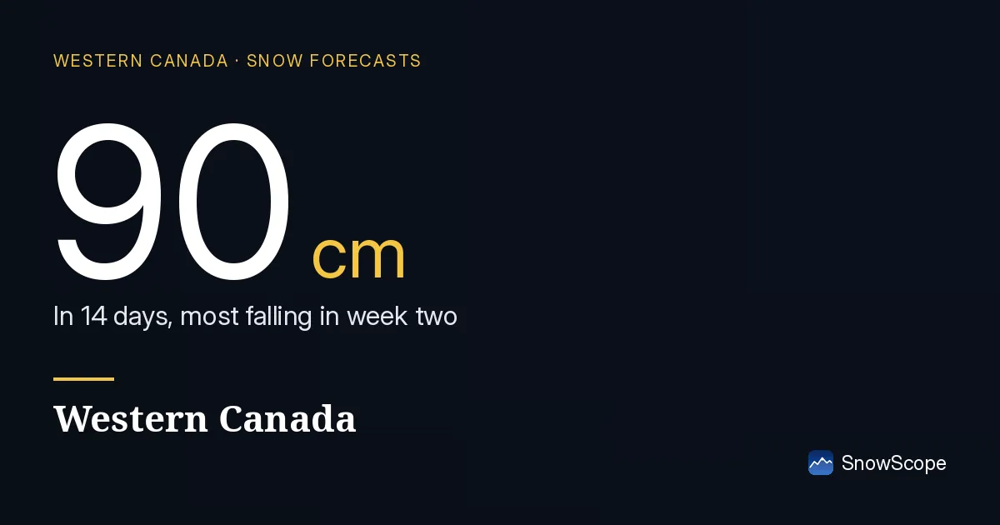
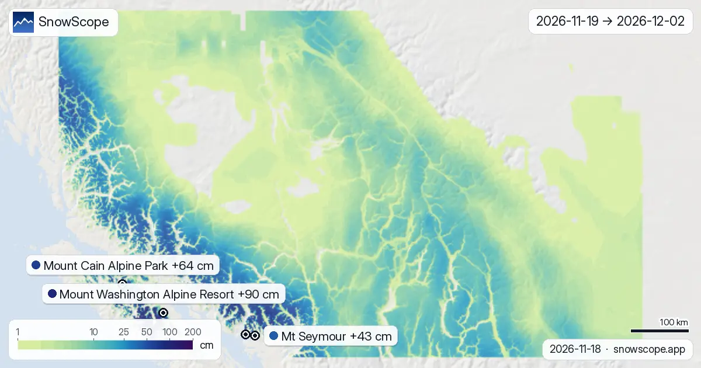
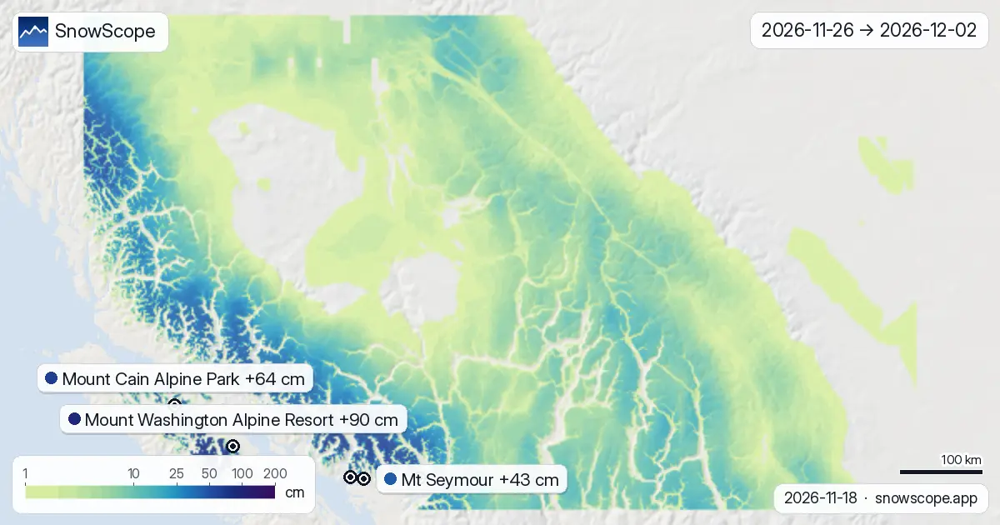

Western Canada: 90 cm in 14 days, most falling in week two
Mount Washington Alpine Resort will gain around 90 cm of snow over the next two weeks, with the bulk arriving after 25 November. Week two brings the deeper accumulations, peaking on 26 November with 27 cm.
See the live snow forecast for Mount Washington Alpine Resort in the SnowScope appSnow depth, powder alerts and the 3D map, free.
When the snow falls: a quiet start, then sustained action
The first week (19-25 November) stays mostly dry. Only 20 cm is forecast to fall across the region's mid-mountain terrain during days 1-7, and Mount Washington itself will see just 18 cm in that window. The real event begins on 24 November, when 9 cm lands.
Week two (26 November to 2 December) is where the story changes. Our models agree that 70 cm will fall at Mount Washington over those eight days. The heaviest single day is 26 November: 27 cm. This is followed by another strong day on 27 November with 22 cm, then a secondary peak on 28 November with 11 cm. Even after the main system clears, light falls continue through early December.
| Resort | Snow depth | New snow, 72 h | Coming, next days | Top |
|---|---|---|---|---|
| Mount Washington Alpine Resort | 104 cm | 8 cm | 0 cm | 1,569 m |
| Mount Cain Alpine Park | 89 cm | 8 cm | 0 cm | 1,616 m |
| Mt Seymour | 6 cm | 8 cm | 0 cm | 1,255 m |
| Sasquatch | 23 cm | 15 cm | 0 cm | 1,316 m |
| Whistler Blackcomb | 136 cm | 8 cm | 0 cm | 2,259 m |
| Cypress Mountain | 6 cm | 9 cm | 0 cm | 1,426 m |

Height matters: mid-elevations catch most
Across all terrain in Western Canada, the height band 1500-2000 m is forecast to receive the most new snow: a median of 7 cm, with some areas getting up to 13 cm. Above 1000 m, all elevations see accumulation, but higher peaks (3000-4500 m) receive less—around 6 cm median—as they sit above much of the precipitation.
Mount Washington's upper slopes at 1349 m fall in the favourable 1500-2000 m band, explaining why it leads the region. Mount Cain Alpine Park and the lower resorts near sea level (Cypress Mountain, Mt Seymour) will see proportionally less, though they still gain measurable snow.

Which resorts gain most
Mount Washington Alpine Resort tops the region with 90 cm forecast over 14 days. Mount Cain Alpine Park comes next with 64 cm, also on Vancouver Island. Lower coastal resorts like Mt Seymour and Cypress Mountain receive around 40-43 cm, while Whistler Blackcomb, despite sitting at higher elevation (2259 m at the summit), is forecast to gain only 38 cm because the two weather models have less agreement at that latitude and altitude.
By area, 40,000 km² of the region's mountain terrain is forecast to receive 20 cm or more over the fortnight. Only 7,700 km² will see 50 cm or more—mostly the northern Vancouver Island peaks and the highest slopes.

How this compares to history
Mount Washington normally sits at 30 cm depth by late November, with the snowiest weeks of the season historically being weeks 8, 53, and 13 (late February, early January, and late March). Today it has only 104 cm at mid-elevation, well below the typical 78 cm high for this time of year. The 90 cm coming over two weeks will help but still leave the mountain tracking below average for late November.
Uncertainty and what to watch
These values come from the average of two independent global models (ECMWF and NOAA). The range between them is wide: Mount Washington could see as little as 48 cm or as much as 133 cm depending on how the systems track. The models agree strongly on 26-27 November being the peak dates, but the amount on those days could shift by several centimetres if steering patterns change.
Early-season snow can be thin over rocks at lower elevations, especially on exposed lower slopes near 1000 m. Upper slopes hold snow longer. Watch for model updates over the next five days; if the systems track south, coastal resorts gain more; if they track north, island peaks benefit.
Tips for skiers
- Best timing for skiing: aim for 27 November onwards at Mount Washington and Mount Cain. The heaviest snow falls 26-28 November; plan to be there mid-to-late week if you want fresh tracks.
- Elevation strategy: stick to mid and upper slopes (1500 m and above) where snow is deeper and more reliable. Lower slopes near village bases may be thin early in the season.
- Watch the forecast. The gap between the two models is 85 cm at Mount Washington (low 48, high 133). Check back on 20-21 November for a sharper picture as the system gets closer.
- If you go off-piste, consult the official avalanche bulletin for the region before heading into the backcountry.
- Second week strategy: Mount Washington and Mount Cain are your most reliable bets. Whistler and lower coastal resorts will also see snow but less of it.
About these numbers
Resort snow depths are the deepest snow on the resort's upper slopes from the SnowScope snow model (about 1 km, run of 18 November); they are estimates for an area, not a measurement at one point. Station values are measurements on the date shown. Forecasts can change. Always read the official avalanche bulletin before going off-piste.
Official avalanche bulletins: Avalanche Canada
Cite this report
For research, teaching or the press: the numbers and charts are free to reuse under CC BY 4.0 with this citation.
SnowScope (2026), Western Canada: 90 cm in 14 days, most falling in week two, https://snowscope.app/blog/en/2026/11/western-canada-2-week-snow-forecast-maps-18-november-2026.html, accessed 2026-11-18
SnowScope (Atlas Labs). (2026, November 18). Western Canada: 90 cm in 14 days, most falling in week two. SnowScope snow reports. https://snowscope.app/blog/en/2026/11/western-canada-2-week-snow-forecast-maps-18-november-2026.html
BibTeX
@misc{snowscope2026westerncanada2weeksnowfo,
author = {{SnowScope (Atlas Labs)}},
title = {Western Canada: 90 cm in 14 days, most falling in week two},
year = {2026},
month = nov,
howpublished = {\url{https://snowscope.app/blog/en/2026/11/western-canada-2-week-snow-forecast-maps-18-november-2026.html}},
note = {Published 2026-11-18 15:08 UTC; accessed 2026-11-18}
}· CC BY 4.0 · Methods, data and tools →
Mount Washington Alpine Resort: snow and temperature by height, this winter vs last (tools) →
Follow Mount Washington Alpine Resort
Free: a message when fresh snow is coming, and the forecast every morning.
More snow reports

Whistler Blackcomb got 75 cm of new snow at the top in a week, then a warm storm with 124 mm of water. A simple guide to base, fresh snow, rain and crust.

Whistler Blackcomb will receive 101 cm of new snow by November 25, far exceeding early-season norms. Mount Cain Alpine Park leads the region with 132 cm forecast.

Mount Washington holds 145 cm on 8 November, the deepest in Western Canada, but the freezing level will climb above the summit by 11 November.